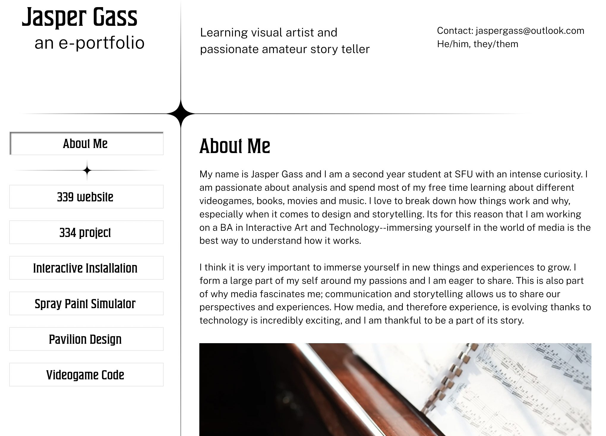
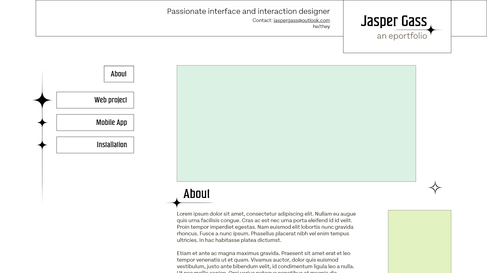
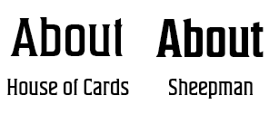

First Portfolio Website
Fall 2022
Introduction
This portfolio website started as a 3 week long project for a web development class I took fall 2022. As an individual project, I was solely responsible. The major components of the site were the style guide, a statement about myself and 2 projects. I continued to develop the website after this project.
Process
I had a personal portfolio prior to this project that I adapted from. My previous website, through Wix, was not responsive as seen in the screenshot below where the content gets cut off on the right side. To see this original site, visit https://jaspergass.wixsite.com/jjgportfolio
When creating my style guide I wanted a style minimal enough to let my projects and site content stand out, but also retain some character and uniqueness.
I then made wireframes. The wireframe below shows the layout I chose for the site, and below it are two alternative versions of the header I considered.
I then started filling the site with content. I received feedback from my TA that my personal statement and projects lacked direction, so I refined my goals to be more specific to UX/UI and web development work. A good example of this shift is seen in my personal title which I changed from “experience artist and interaction designer” to “interface and interaction designer.”
The rest of the work fell in pace as I simply put the content in and worked on website flexibility. For an inside look at the html structure of this page, turn off the lights!
One of the most important changes I made while refining this site after the project was due was changing my title font. It was essential to the branding I had created, but after getting a few people to test my site I got feedback that suggested it was not easy to read. I changed from House of Cards to Sheepman to keep the style but increase legibility.
Reflection
The most challenging part of this project was refining what my ambitions were. I have a lot of interests so I always find it challenging to narrow down and focus on passions. This project made me realize that I needed more direction and helped me refine my ideas of what career paths I want to work towards. I am excited about the path ahead of me and I hope to refine my skills with this newfound direction.